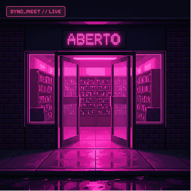
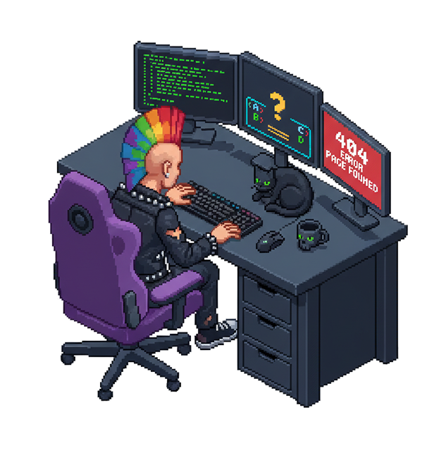
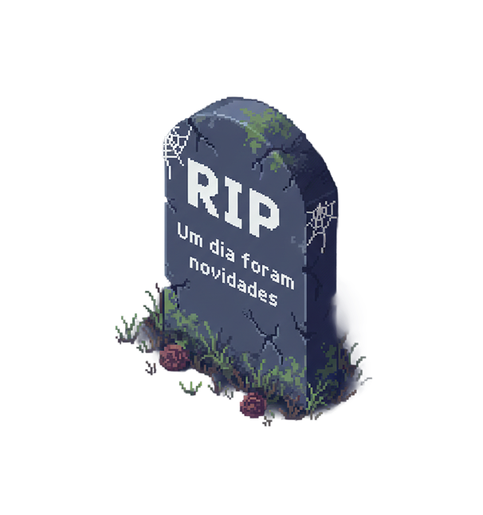
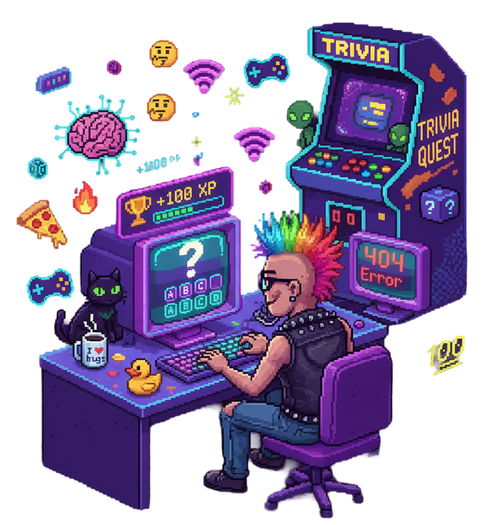
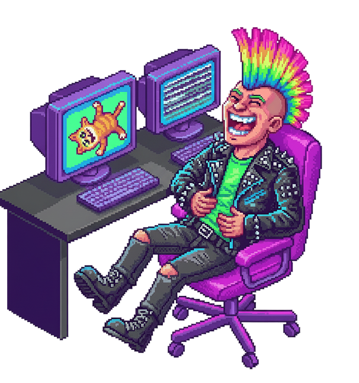

IA
IA
A beleza de falar mal de criações com IA
Discursos de quem jura nunca usar IA. Pureza intelectual em dose máxima.
Leia mais
 Underground dos 8 Bits
Underground dos 8 Bits
Hoje tudo virou
experiência.
 IA
IA
Discursos de quem jura nunca usar IA. Pureza intelectual em dose máxima.
Leia mais Contexto
Contexto
Antes significava medo. Hoje virou elogio de marketing.
Leia mais Cultura Digital
Cultura Digital
Do “não entendi” infinito até esconder o atendente como se fosse o final boss.
Leia mais
Cultura DigitalLocadoras, algoritmos e o que perdemos na busca por eficiência.
Leia mais
"Grossário"
Aqui a gente abre o termo,
tira o verniz e mostra o que sobra.
Memorial digital
Tecnologias, tendências e conceitos
que a internet já enterrou.


Humor do Tiozão
Não consigo devolver seus minutos perdidos com os posts. Só posso garantir que vão valer a pena.

Sobre nós
Mas é incrível a quantidade
de coisas que podem
nascer dele...
 Ou algum lugar por aí
Ou algum lugar por aí
A internet é rápida.
As pessoas têm pressa.
E no fim, tudo vira memória.